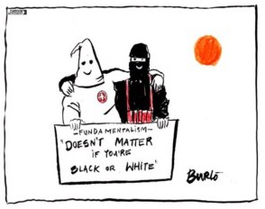

1859 Darwin's Origin of the Species claims the world is far older than the Bible allows, and rejects history guided by God; natural selection contradicts the Bible claim that God created each species.
1874 What is Darwinism Charles Hodge attacks evolution as atheistic; he and others form the core of Princeton Theology, a fundamentalist doctrine;
1910-1915 AC Dixon The Fundamentals expresses opposition to modernism and higher criticism (the documentary hypothesis), and tries to make biblical theology an empiricist philosophy.

In Fundamentalism, three streams converge: those of Evangelicalism (Great Awakening), Dispensationalism (apocalypticism), and Princeton Theology (Biblical inerrancy), to assert five fundamental beliefs:
1) inerrancy of the Bible,
2) the literal nature of the biblical accounts, especially regarding Christ's miracles and the Creation account in Genesis,
3) the virgin birth of Christ,
4) the bodily resurrection and physical return of Christ, and
5) the substitutionary atonement of Christ on the cross.
In socio-political terms, fundamentalism reflects dismay over: the loss of the old religion-based Anglo- Saxon order; the movement from an agrarian to an urban society; immigration by non-white, non- Protestants; higher criticism poking holes in the Bible; the collapse of western values during World War I; the rise of unions; the rise of women; the rise of minorities; and the spread of secondary schools exposing children to secular ideas and religious doubt.
1915 Anger and dismay at modernism is channeled into the reborn political wing of the Fundamentalist movement, the Ku Klux Klan.
1916 Karl Barth’s Epistle to the Romans: The brutality of World War I causes a loss of confidence in modernism, and emphasizes God's transcendence. Barth agrees with Feuerbach that religion is ‘people talking about people.’ Barth prefers revelation - confession, acknowledgement of god's saving message. Much influenced by K, Barth asserts that God cannot be known, that religion is ultimately disbelief, that religion never gets beyond man to God, that religion is justification of ourselves, that theology is anthropology, that one should be suspicious of religion, that we should allow God to reach us through revelation, taken on faith. But trying to defend this confession is to acknowledge that humans can judge and explain God (uh-oh); one must read the Bible as the witness of God's revelation. On the left, he rejects Schleiermacher’s transcendence; and on the right, he rejects biblical inerrancy and total depravity. The bases of faith, however, he considers a priori.
1919 Prohibition passes, a predominantly Fundamentalist cause.
~~~~~~~~